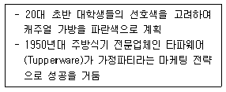
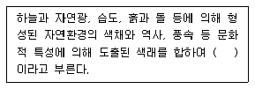
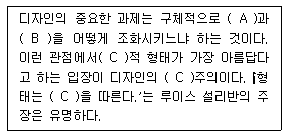
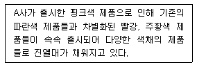
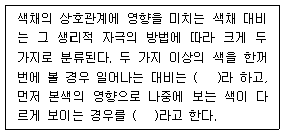
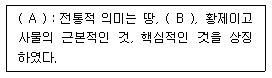
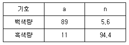
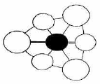

컬러리스트기사 (2018-03-04 기출문제)
1과목: 색채심리 마케팅
1. 다음 중 색의 감정효과에 대한 설명이 옳은 것은?
- 강력한 원색은 피로감이 생기기 쉽고, 자극시간이 길게 느껴진다.
- 한색계통의 연한색은 피로감이 생기기 쉽고, 자극시간이 길게 느껴진다.
- 난색계통의 저명도 색은 진출되어 보인다.
- 한색계통의 저명도 색은 활기차 보인다.
(정답률: 86%)

2. 색채를 조절할 때 기능을 최고도로 발휘할 수 있도록 색을 선택, 부여하는 효과와 가장 관련이 없는 것은?
- 운동감
- 심미성
- 연색성
- 대비효과
(정답률: 49%)
3. 다음의 보기가 공통적으로 설명하는 것은?

- 기술, 자연적 환경
- 사회, 문화적 환경
- 심리, 행동적 환경
- 인구통계, 경제적 환경
(정답률: 38%)
4. 다음 색채의 라이프 단계에 대한 설명 중 틀린 것은?
- 도입기는 색채 마케팅에 의한 브랜드 색채를 선정하는 시기이다.
- 성장기는 시장이 확대되는 시기로 색채마케팅을 통해 알리는 시기이다.
- 성숙기는 안정적인 단계로 포지셔닝을 고려하여 기존의 전략을 유지하는 시기이다.
- 쇠퇴기는 색채마케팅의 새로운 이미지나 대처방안이 필요한 시기이다.
(정답률: 73%)
5. 사용경험, 사용량, 브랜드 충성도, 가격 민감도 등과 관련이 있는 시장 세분화 방법은?
- 인구학적 세분화
- 행동분석적 세분화
- 지리적 세분화
- 사회·문화적 세분화
(정답률: 82%)
6. 색의 느낌과 형태감을 사람의 행동유발과 관련지은 설명 중 옳은 것은?
- 노랑 - 공상적, 상상력, 퇴폐적인 행동 유발
- 파랑 - 침착, 정직, 논리적인 행동 유발
- 보라 - 흥분적, 행동적, 우발적인 행동 유발
- 빨강 - 안정적, 편안한, 자유로운 행동 유발
(정답률: 85%)
7. 마케팅에서 소비자 생활유형을 조사하는 목적이 아닌 것은?
- 소비자의 선호색 조사
- 소비자의 가치관 조사
- 소비자의 소비형태 조사
- 소비자의 행동특성 조사
(정답률: 45%)
8. 라이프스타일에 관한 설명이 틀린 것은?
- 소비자가 어떤 방식으로 시간과 제화를 사용하면서 세상을 살아가는가에 대한 선택의 의미이다.
- 라이프스타일에 따른 소비자 시장의 연구는 소비자가 어떤 활동, 관심, 의견을 가지고 있는가를 중심으로 이루어진다.
- 라이프스타일은 소득, 직장, 가족 수, 지역, 생활주기 등을 기초로 분석된다.
- 라이프스타일은 사회의 변화에 관계없이 개인의 가치관에 따라서 변화된다.
(정답률: 76%)
9. 다음 중 색채선호의 원리가 아닌 것은?
- 선호색은 대상이 무엇이든 항상 동일하다.
- 서양의 경우 성인의 파란색에 대한 선호 경향은 매우 뚜렷한 편이다.
- 노년층의 경우 고채도 난색 계열의 색채에 대한 선호가 높은 편이다.
- 선호색은 문화권, 성별, 연령 등 개인적 특성에 따른 차이가 있다.
(정답률: 87%)
10. 마케팅의 변천된 개념과 그에 대한 설명이 틀린 것은?
- 제품 지향적 마케팅：제품 및 서비스의 생산과 유통을 강조하여 효율성을 개선
- 판매 지향적 마케팅：소비자의 구매유도를 통해 판매량을 증가시키기 위한 판매기술의 개선
- 소비자 지향적 마케팅：고객의 요구를 이해하고 이에 부응하는 기업의 활동을 통합하여 고객의 욕구충족
- 사회 지향적 마케팅：기업이 인간 지향적인 사고로 사회적 책임을 다하는 것
(정답률: 25%)
11. 다음 중 소비자의 구매심리 과정이 아닌 것은?
- A(Action)
- I(Interest)
- O(Opportunity)
- M(Memory)
(정답률: 80%)
12. 신성하고 성스러운 결혼식을 위한 장신구에 진주, 흰색 리본, 흰색 장갑 등과 같이 흰색을 주로 사용하였다. 이는 다음 중 색채의 어떤 측면과 관련된 행동인가?
- 색채의 공감각
- 색채의 연상, 상징
- 색채의 파장
- 안전색채
(정답률: 90%)
13. 색채시장 조사의 기능이 잘 이루어진 결과와 가장 관련이 없는 것은?
- 판매촉진의 효과가 크다.
- 사고와 재해를 감소시켜 준다.
- 의사결정 오류를 감소시킨다.
- 유통 경제상의 절약효과를 제공한다.
(정답률: 50%)
14. 다음 중 ( )에 적합한 용어는?

- 선호색
- 지역색
- 국가색
- 민족색
(정답률: 89%)
15. 지역적인 특성에 따른 소비자의 자동차 색채선호 특성을 조사하고자 한다. 가장 적합한 표본추출 방법은?
- 단순무작위추출법
- 체계적표본추출법
- 층화표본추출법
- 군집표본추출법
(정답률: 38%)
16. 제품의 수명 주기를 일컫는 용어 중에 2002년 월드컵 기간 동안 빨간색 티셔츠의 유행과 같이 제품에 대한 폭발적 반응이 비교적 짧은 기간에 종료되는 주기를 갖는 것을 무엇이라 하는가?
- 패션(fashion)
- 트렌드(trend)
- 패드(fad)
- 플로프(flop)
(정답률: 71%)
17. 어떤 소리를 듣게 되면 색이나 빛이 눈앞에 떠오르는 현상은?
- 색광
- 색감
- 색청
- 색톤
(정답률: 76%)
18. 색채시장조사의 과정 중 거시적 환경을 조사할 때 중요한 내용 중의 하나가 유행색에 대한 정보의 수집과 분석이다. 유행색에 대한 설명으로 틀린 것은?
- 유행색은 매 시즌 정기적으로 유행색을 발표하는 색채 전문기관에 의해 예측되는 색이다.
- 색채에 있어 특정 스타일을 동조하고 그것이 보편화되어 새로운 것을 추구하는 유행의 속성이 적용되면 유행색이 된다.
- 유행색은 어떤 일정기간 동안 특별히 많은 사람들이 선호하여 사용하는 색이다.
- 패션산업에서는 실 시즌의 약 1년 전에 유행예측색이 제안되고 있다.
(정답률: 80%)
19. 컬러 마케팅의 직접적인 효과로 보기 어려운 것은?
- 브랜드 가치의 업그레이드
- 기업의 아이덴티티 형성
- 기업의 매출 증대
- 브랜드 기획력 향상
(정답률: 65%)
20. 매슬로우(Maslow)는 인간의 욕구가 5단계로 구분된다고 설명하였다. 이 욕구 단계에 해당하지 않는 것은?
- 생리적 욕구
- 사회적 욕구
- 자아실현 욕구
- 필요의 욕구
(정답률: 83%)
2과목: 색채디자인
21. (A), (B), (C)에 적합한 용어를 순서대로 옳게 나열한 것은?

- 심미성, 경제성, 독창
- 심미성, 실용성, 기능
- 심미성, 경제성, 조형
- 심미성, 실용성, 자연
(정답률: 84%)
22. ‘디자인(Design)’의 설명 중 틀린 것은?
- ‘디자인’이란 용어는 문화권에 따라 그대로 사용되거나 자국어로 번역되어 사용된다.
- 사회적인 가치와 효용적인 가치를 고려해야 하는 사회적인 창조활동이다.
- 디자인은 산업시대 이후 근대사회가 형성시킨 근대적인 개념이다.
- 여러 가지 물질문화적인 측면에서 생활의 문제를 해결하는 일을 디자인이라 한다.
(정답률: 40%)
23. 로맨틱 패션이미지 연출과 관련이 없는 것은?
- 소녀 감성을 지향하고 부드러운 소재가 어울린다.
- 파스텔 톤의 분홍, 보라, 파랑을 주로 사용한다.
- 리본 장식이나 레이스를 이용하여 사랑스러운 분위기를 연출한다.
- 화려하고 우아한 이미지를 위해 전체적으로 직선 위주로 연출한다.
(정답률: 88%)
24. 색채 계획의 목적 및 효과에 대한 설명으로 틀린 것은?
- 소재감을 강조하거나 완화한다.
- 질서를 부여하고 통합한다.
- 인상과 개성을 부여하지 않는다.
- 심리적인 안정을 제공한다.
(정답률: 85%)
25. 형의 개념요소가 아닌 것은?
- 점
- 입체
- 공간
- 비례
(정답률: 53%)
26. 색채디자인의 매체전략 방법과 거리가 먼 것은?
- 통일성(Identity)
- 근접성(Proximity)
- 주목성(Attention)
- 연상(Association)
(정답률: 58%)
27. 게슈탈트의 그루핑 법칙에 대한 설명이 틀린 것은?
- 유사성 - 비슷한 모양의 형이나 그룹을 다 함께 하나의 부류로 보는 경향
- 폐쇄성 - 불완전한 형이나 그룹들을 폐쇄 하거나 완전한 형이나 그룹으로 완성시키려는 경향
- 연속성 - 형이나 형의 그룹들이 방향성을 지니고 연속되어 보이는 방식으로 배열되는 경향
- 근접성 - 익숙하지 않은 형을 이미 아는 익숙한 형과 연관시켜 보려는 경향
(정답률: 66%)
28. 바우하우스(Bauhaus)에 지대한 영향을 끼친 20세기 초의 미술운동이 아닌 것은?
- 초현실주의(Surrealism)
- 구성주의(Constructivism)
- 표현주의(Expressionism)
- 데스틸(De stijl)
(정답률: 58%)
29. 대중문화 속에 등장하는 이미지를 미술로 수용하여 낙관적 분위기와 원색적인 색채 사용이 특징이 사조는?
- 포스트모더니즘
- 팝아트
- 옵아트
- 유기적 모더니즘
(정답률: 83%)
30. 패션디자인 분야에서 유행색의 설명으로 틀린 것은?
- 어떤 계절이나 일정기간 동안 많은 사람들이 선호하여 착용한 색을 말한다.
- 다른 디자인 분야에 비해 변화가 빠르지 않고 색 영역이 단순하다.
- 계절적인 영향을 많이 받는다.
- 선호되는 배색은 유행의 추이에 따라 변화한다.
(정답률: 88%)
31. DM의 종류에 대한 설명으로 틀린 것은?
- 팜플렛, 카탈로그, 브로슈어, 서신 등 소구 대상이 명확하다.
- 집중적인 설득을 할 수 있는 광고로 소비자에게 우편이나 이메일로 전달된다.
- 예상고객을 수집, 관리하기 어려워 주목성이 떨어질 수 있다.
- 지역과 소구대상이 한정되어 있어 광범위한 광고가 어렵다.
(정답률: 56%)
32. 광고 캠페인 전개 초기에 소비자의 호기심을 불러일으키기 위해 메시지 내용을 처음부터 전부 보여주지 않고 조금씩 단계별로 내용을 노출시키는 광고는?
- 팁온(tip-on)광고
- 티저(teaser)광고
- 패러디(parody)광고
- 블록(block)광고
(정답률: 88%)
33. 유니버설 디자인에 대한 설명으로 옳은 것은?
- 인본주의적 디자인
- 다국적 언어 디자인
- 친자연적 디자인
- 간단한 디자인
(정답률: 53%)
34. 디자인에 대한 설명 중 틀린 것은?
- 디자인의 목표는 미적인 것과 기능적인 것을 제품으로 통합하는 것이다.
- 안전하며 사용하기 쉽고 아름답고 쾌적한 생활환경을 창조하는 조형행위이다.
- 디자인의 공통되는 기본목표는 미와 기능의 조화이다.
- 디자인은 자연적인 창작 행위로서 기능적 측면보다는 미적 추구를 목적으로 한다.
(정답률: 88%)
35. 기능주의에 입각한 모던디자인의 전통에 반대하여 20세기 후반에 일어난 인간의 정서적, 유희적 본성을 중시하는 디자인 사조로서 역사와 전통의 중요성을 재인식하고 적극 도입하여 과거로의 복귀와 디자인에서의 의미를 추구한 경향은?
- 합리주의
- 포스트모더니즘
- 절충주의
- 팝아트
(정답률: 77%)
36. 다음 중 운동감과 관련이 없는 것은?
- 색이나 형의 그라데이션
- 일정하지 않은 격자무늬나 사선
- 선과 면으로만 표현이 가능
- 움직이지 않는 형태와 역동적인 형태의 배치
(정답률: 60%)
37. 영국의 공예가로 예술의 민주화, 예술의 생활화를 주장해 근대 디자인의 이념적 기초를 마련한 사람은?
- 피엣 몬드리안
- 윌리엄 모리스
- 허버트 맥네어
- 오브리 비어즐기
(정답률: 81%)
38. 사용자와 디지털 디바이스 사이에서 효과적으로 커뮤니케이션 할 수 있도록 디자인하는 분야는?
- 애니메이션 디자인
- 모션그래픽 디자인
- 캐릭터 디자인
- 사용자 인터페이스 디자인
(정답률: 82%)
39. [보기]에서 설명하는 제품의 색채 디자인은 제품의 수명 주기 중 어느 단계에 해당하는 것인가?

- 도입기
- 성장기
- 성숙기
- 쇠퇴기
(정답률: 54%)
40. 도시환경 디자인에서 거리 시설물 디자인 시 고려해야 할 사항으로 가장 거리가 먼 것은?
- 편리성
- 경제성
- 상품성
- 안전성
(정답률: 81%)
3과목: 색채관리
41. 컴퓨터 자동배색에 대한 설명이 옳은 것은?
- 색료 선택, 초기 레시피 예측, 실 제작을 통한 레시피 수정의 최소한 세 개의 주요 기능을 포함해야 한다.
- 컴퓨터 알고리즘을 이용하므로 색료 및 소재에 대한 데이터베이스는 필요하지 않다.
- 레시피 수정 알고리즘을 포함하지 않으므로, 사용자가 직접 측정된 색과 목표색의 차이를 계산하여 레시피 예측 알고리즘의 보정계수를 산출해야 한다.
- 필터식 색채계와 컴퓨터 소프트웨어를 활용한다.
(정답률: 57%)
42. 다음 중 광원과 색온도에 대하여 옳게 설명한 것은?
- 낮은 색온도는 시원한 색에 대응되고, 높은 색온도는 따뜻한 색에 대응된다.
- 백열등은 상관 색온도로 구분하고, 열광원이 아닌 경우는 흑체의 색온도로 구분한다.
- 흑체는 온도에 의해 분광분포가 결정되므로 광원색을 온도로 수치화할 수 있다.
- 형광등은 자체가 뜨거워져서 빛을 내는 열광원이다.
(정답률: 39%)
43. ICC 기반 색채관리시스템에 대한 설명으로 틀린 것은?
- CIEXYZ 또는 CIELAB을 PCS로 사용한다.
- 색채변환을 위해서 항상 입력과 출력 프로 파일이 필요하지는 않다.
- 운영체제에서 특정 CMM을 선택하는 것은 가능하다.
- CIELAB의 지각적 불균형 문제를 CMM에서 보완할 수 있다.
(정답률: 77%)
44. CCM의 특징과 가장 거리가 먼 것은?
- 최소비용의 색채처방을 산출할 수 있다.
- 염색배합처방 및 가공비를 정확하게 산출할 수 있다.
- 아이소메릭 매칭(Isomeric Matching)을 할 수 있다.
- 색영역 매핑을 통해 입출력 장치들의 색채 관리를 주목적으로 한다.
(정답률: 37%)
45. KS A 0064에 의한 색 관련 용어의 정의가 틀린 것은?
- 백색도(whiteness)：표면색의 흰 정도를 1차원적으로 나타낸 수치
- 분포온도(distribution temperature)：완전 복사체의 색도를 그것의 절대 온도로 표시한 것
- 크로미넌스(chrominance)：시료색 자극의 특정 무채색 자극에서의 색도차와 휘도의 곱
- 밝기(brightness)：광원 또는 물체 표면의 명암에 관한 시지(감)각의 속성
(정답률: 36%)
46. 회화에서 사용하는 안료 중 자외선에 의한 내광이 약함으로 색채 적용 시 주의해야 할 안료 계열은?
- 광물성 안료 계열
- 카드뮴 안료 계열
- 코발트 안료 계열
- 형광 안료 계열
(정답률: 59%)
47. 해상도(resolution)에 관한 설명 중 옳은 것은?
- 화면에 디스플레이 된 색채 영상의 선명도는 해상도 및 모니터 크기와는 관계가 없다.
- ppi는 1인치 내에 들어갈 수 있는 픽셀의 수를 말한다.
- 픽셀의 색상은 빨강, 시안, 노랑의 3가지 색상의 스펙트럼 요소들로 만들진다.
- 1280×1024의 해상도를 가지고 있는 디스플레이 시스템은 그보다 낮은 해상도를 지원하지 못한다.
(정답률: 64%)
48. 제시 조건이나 재질 등의 차이에 따라 변화를 보이는 주관적인 색의 현상은?
- 컬러 프로파일
- 컬러 케스트
- 컬러 세퍼레이션
- 컬러 어피어런스
(정답률: 59%)
49. 시각에 관한 용어의 설명이 틀린 것은?
- 푸르킨예 현상: 시각이 명소시에서 암소시로 바뀌게 되면 장파장 빛에 대한 효율은 떨어지고 단파장 빛에 대한 효율은 올라가는 현상
- 명소시(photopic vision): 정상의 눈으로 암순응된 시각의 상태
- 색순응: 색광에 대하여 눈의 감수성이 순응하는 과정이나 그런 상태
- 박명시: 명소시와 암소기의 중간 밝기에서 추상체와 간상체 양쪽이 작용하는 있는 시각의 상태
(정답률: 60%)
50. 색 측정에 대한 설명 중 틀린 것은?
- 색을 측정하는 방법에는 육안검색방법과 기기를 이용하는 방법이 있다.
- 기기를 이용하는 경우는 유동체인 빛을 측정하는 것이므로 한 번에 정확하게 측정하여야한다.
- 육안으로 검색하는 경우는 컨디션이나 사용 목적에 따라 판단이 달라질 수 있으므로 객관적인 조건이 필요하다.
- 측색의 목적은 정확하게 색을 파악하고, 색을 전달하고, 재현하는데 있다.
(정답률: 79%)
51. 색의 측정 시 분광광도계의 조건으로 잘못된 것은?
- 측정하는 파장 범위는 380nm~780nm로 한다.
- 분광광도계의 파장폭은 3자극치의 계산을 10nm 간격에서 할 때는 (5±1)nm로 한다.
- 분광반사율의 측정 불확도는 최대치의 0.5% 이내에서 한다.
- 분광광도계의 파장은 1nm 이내의 정확도를 유지해야 한다.
(정답률: 52%)
52. 일정한 두께를 가진 발색층에서 감법혼색을 하는 경우에 성립하는 원리로서 CCM에 사용되는 이론은?
- 데이비스-깁슨 이론(Davis-Gibson theory)
- 헌터 이론(Hunter theory)
- 쿠벨카 문크 이론(Kubelka Munk theory)
- 오스트발트 이론(Ostwald theory)
(정답률: 64%)
53. 표면색의 시감비교방법에 대한 설명이 틀린 것은?
- 부스의 내부는 명도 L*가 약 60~70의 무광택의 무채색으로 한다.
- 작업면의 색은 원칙적으로 무광택이며, 명도 L*가 50인 무채색으로 한다.
- 비교하는 색면의 크기가 관찰거리는 시야각으로 약 2도 또는 10도가 되도록 한다.
- 색 비교를 위한 작업면의 조도는 1000lx∼4000lx 사이로 한다.
(정답률: 41%)
54. 광택도에 대한 설명 중 틀린 것은?
- 변각광도 분포는 기준광원을 45도에 두고 관찰각도를 옮겨서 반사각도를 측정하는 방법이다.
- 광택도는 변각광도 분포, 경면광택도, 선명광택도로 측정한다.
- 광택도는 100을 기준으로 40∼50을 완전무광택으로 분류한다.
- 광택의 정도는 표면의 매끄러움과 직접적인 관계가 있다.
(정답률: 56%)
55. 다음 중 특수 안료가 아닌 것은?
- 형광안료
- 인광안료
- 천연유기안료
- 진주광택안료
(정답률: 62%)
56. 광원의 연색성 평가와 관련한 설명이 틀린 것은?
- 연색 평가수의 계산에 사용하는 기준광원은 시료광원의 색온도가 5000K 이하일 때 CIE 합성주광을 사용한다.
- 연색 평가 지수는 광원의 연색성을 나타내는 것을 목적으로 한 지수이다.
- 평균 연색 평가 지수는 규정된 8종류의 시험색에 대한 특수연색평가지수의 평균값에 해당하는 연색평가지수이다.
- 특수 연색 평가 지수는 규정된 시험색의 각각에 대하여 기준광으로 조명하였을 때와 시료광원으로 조명하였을 때의 색차를 바탕으로 광원의 연색성을 평가한 지수이다.
(정답률: 38%)
57. 형광 물체색의 측정 방법에 대한 설명이 틀린 것은?
- 시료면 조명광에 사용되는 측정용 광원은 그 상대 분광 분포가 측색용 광의 상대 분광분포와 어느 정도 근사한 광원으로 한다.
- 측정용 광원은 380nm∼780nm의 파장 전역에는 복사가 없고, 300nm 미만인 파장역에는 복사가 있는 것이 필요하다.
- 표준 백색판은 시료면 조명광으로 조명했을 때 형광을 발하지 않아야 한다.
- 형광성 물체에서는 전체 분광복사 휘도율 값이 1을 초과하는 수가 많으므로, 측광기는 측광 눈금의 범위가 충분히 넓은 것이어야 한다.
(정답률: 46%)
58. 색영역 매핑(gamut mapping)에 대하여 옳게 설명한 것은?
- 색역이 일치하지 않는 색채장치 간에 색채의 구현이 효과적으로 이루어지도록 색채표현 방식을 조절하는 기술이다.
- 인간이 느끼는 색채보다도 측색값이 일치하도록 하는 것이 주된 목적으로 실행된다.
- 색 영역 바깥의 모든 색을 색 영역 가장자리로 옮기는 것은 색 영역 압축방법이다.
- CMYK 색공간이 RGB 색공간보다 넓기 때문에 CMYK에서 재현된 색을 RGB 공간에서 수용할 수가 없다.
(정답률: 56%)
59. 분광 광도계(spectrophotometer)로 반사 물체 측정 시 기하학적 조건에 대한 설명으로 틀린 것은?
- 8도：확산배열, 정반사성분제외(8°：de) - 이 배치는 di：8°와 일치하며 다만 광의 진행이 반대이다.
- 확산：0도 배열(d：0) - 정반사 성분이 완벽히 제거되는 배치이다.
- 수직/45도 배열(0°：45°×) - 빛은 수직으로 비춰지는 법선을 기준으로 45도 방향에서 측정한다.
- 확산/확산 배열(d：d) - 이 배치의 조명은 di：8°와 일치하며 반사광들은 반사체의 반구면을 따라 모두 모은다.
(정답률: 44%)
60. 색채를 발색할 때는 기본이 되는 주색(primary color)에 의해서 색역(color gamut)이 정해진다. 혼색방법에 따른 색역의 변화에 대한 설명 중 틀린 것은?
- 조명광 등의 혼색에서 주색은 좁은 파장 영역의 빛만을 발생하는 색채가 가법혼색의 주색이 된다.
- 가법혼색은 각 주색의 파장영역이 좁으면 좁을수록 색역이 오히려 확장되는 특징이 있다.
- 백색원단이나 바탕소재에 염료나 안료를 배합할수록 전체적인 밝기가 점점 감소하면서 혼색이 된다.
- 감법혼색에서 시안은 파란색 영역의 반사율을, 마젠타는 빨간색 영역의 반사율을, 노랑은 녹색 영역의 반사율을 효과적으로 감소시킨다.
(정답률: 47%)
4과목: 색채지각론
61. 다음 중 대비현상의 종류가 다른 하나는?
- 밝은 바탕 위의 어두운 색은 더욱 어둡게 보인다.
- 회색 바탕 위의 유채색은 더 선명하게 보인다.
- 허먼(Hermann)의 격자 착시효과에서 나타나는 현상이다.
- 어두운 색과 대비되는 밝은 색은 더 밝게 느껴진다.
(정답률: 38%)
62. 빨간색광(光)과 초록색광(光)의 혼색 시 나타나는 현상이 아닌 것은?
- 조도가 높아진다.
- 채도가 높아진다.
- 노랑(Yellow) 색광이 된다.
- 시안(Cyan) 색광이 된다.
(정답률: 70%)
63. 조명조건이나 관찰조건이 변해도 물체의 색을 동일하게 지각하는 현상은?
- 연색성
- 항상성
- 색순응
- 색지각
(정답률: 64%)
64. 작업자들의 피로감을 덜어주는데 가장 효과적인 실내 색채는?
- 중명도의 고채도 색
- 저명도의 고채도 색
- 고명도의 저채도 색
- 저명도의 저채도 색
(정답률: 53%)
65. 색의 동화 현상에 대한 설명으로 옳은 것은?
- 두 색이 맞붙어 있을 때 그 경계 주변에서 색상, 명도, 채도 대비의 현상이 보다 강하게 일어나는 현상이다.
- 청록색은 흥분을 가라앉히는 색이며, 빨간색은 혈액순환을 자극해 따뜻하게 느껴지는 색이다.
- 같은 회색 줄무늬라도 파랑 위에 놓인 것은 파랑에 가까워 보이고, 노랑 위에 놓인 것은 노랑에 가까워 보인다.
- 빨강을 본 후 노랑을 보게 되면, 노랑이 연두색에 가까워 보이는 현상이다.
(정답률: 55%)
66. 색과 빛에 대한 설명으로 틀린 것은?
- 인간이 볼 수 있는 가시광선의 파장은 약 380nm∼780nm이다.
- 빛은 파장에 따라 서로 다른 색감을 일으킨다.
- 빛은 파장이 다른 전자파의 집합인 것을 처음 발견한 사람은 요하네스 이텐(Johaness Itten) 이다.
- 여러 가지 파장의 빛이 고르게 섞여 있으면 백색으로 지각된다.
(정답률: 70%)
67. 보색에 대한 설명 중 틀린 것은?
- 보색에 해당하는 두 색광을 혼합하면 백색광이 된다.
- 보색에 해당하는 두 물감을 혼합하면 검정에 가까운 무채색이 된다.
- 색상환 속에서 서로 마주보는 위치에 놓인 색은 모두 보색 관계이다.
- 감법혼합에서 마젠타(magenta)와 노랑(yellow)은 보색관계이다.
(정답률: 67%)
68. 다음 중 색채의 온도감과 가장 밀접한 속성은?
- 채도
- 명도
- 색상
- 톤
(정답률: 65%)
69. 색채지각 효과 중 주변색의 보색이 중심에 있는 색에 겹쳐져 보이는 것으로 ‘괴테현상’ 이라고도 하는 것은?
- 벤함의 탑(Benham's TOP)
- 색음현상(Colored Shadow)
- 맥콜로 효과(McCollough Effect)
- 애브니 효과(Abney Effect)
(정답률: 62%)
70. 인간의 눈 구조에서 시신경 섬유가 나가는 부분으로 광수용기가 없어 대상을 볼 수 없는 곳은?
- 맹점
- 중심와
- 공막
- 맥락막
(정답률: 55%)
71. 색의 심리에서 진출과 후퇴에 대한 설명이 잘못된 것은?
- 난색계가 한색계보다 진출해 보인다.
- 채도가 높은 색이 낮은 색보다 진출해 보인다.
- 유채색이 무채색보다 진출해 보인다.
- 저명도 색이 고명도 색보다 진출해 보인다.
(정답률: 71%)
72. 다음 중 회전혼색과 관련이 없는 것은?
- 혼색에 의해 명도나 채도가 낮아지게 된다.
- 맥스웰은 회전원판을 사용하여 혼색의 원리를 실험하였다.
- 원판의 물체색이 반사하는 반사광이 혼합되어 혼색되어 보인다.
- 두 종류 이상의 색자극이 급속히 교대로 입사하여 생기는 계시혼색이다.
(정답률: 30%)
73. 다음 중 색의 혼합방법이 나머지와 다른 하나는?
- 무대조명
- 네거티브 필림의 제조
- 모니터
- 컬러 슬라이드
(정답률: 54%)
74. 색채지각설에서 헤링이 제시한 기본색은?
- 빨강, 녹색, 파랑
- 빨간, 노랑, 파랑
- 빨강, 노랑, 녹색, 파랑
- 빨강, 노랑, 녹색, 마젠타
(정답률: 66%)
75. 추상체의 대한 설명 중 잘못된 것은?
- 간상체에 비하여 해상도가 떨어진다.
- 색채지각과 관련된 광수용기이다.
- 눈의 망막 중 중심와에 존재하는 광수용기 이다.
- 간상체보다 광량이 풍부한 환경에서 활동하며 색채감각을 일으키는 역할을 한다.
(정답률: 60%)
76. 서양미술의 유명 작가와 그의 회화작품들이다. 이 중 병치 혼색의 원리를 적극적으로 이용한 작품은?
- 몬드리안 - 적·청·황 구성
- 말레비치 - 8개의 정방형
- 쇠라 - 그랑자드 섬의 일요일 오후
- 피카소 - 아비뇽의 처녀들
(정답률: 64%)
77. 보기의 ( )에 들어갈 내용으로 순서대로 바르게 짝지어진 것은?

- 색상대비, 계시대비
- 동시대비, 계시대비
- 계시대비, 동시대비
- 색상대비, 동시대비
(정답률: 76%)
78. 스펙트럼의 파장과 색의 관계를 연결 한 것 중에서 틀린 것은?
- 보라：380∼450nm
- 파랑：500∼570nm
- 노랑：570∼590nm
- 빨강：620∼700nm
(정답률: 57%)
79. 다음 중 채도를 가장 강하게 느낄 수 있는 대비는?
- 보색대비
- 면적대비
- 명도대비
- 계시대비
(정답률: 59%)
80. 순색 노랑의 포스터컬러에 회색을 섞었다. 회색의 밝기를 정확히 알지 못한다고 해도 혼합 후에 가장 명확하게 달라진 속성의 변화는?
- 명도가 높아졌다.
- 채도가 낮아졌다.
- 채도가 높아졌다.
- 명도가 낮아졌다.
(정답률: 69%)
5과목: 색채체계론
81. P.C.C.S 색채계의 특징으로 옳은 것은?
- 근본적으로 조화론을 목적으로 한다.
- yellowish green은 10：YG로 표기한다.
- 지각적으로 등보성이 없다.
- 모든 색상은 12색상으로 구별되어 있다.
(정답률: 28%)
82. 한국산업표준 KS A 0011에서 명명한 색명이 아닌 것은?
- 생활색명
- 일반색명
- 관용색명
- 계통색명
(정답률: 74%)
83. 다음은 전통색에 대한 설명이다. (A)는 전통색, (B)는 방위로 옳은 짝지어진 것은?

- A：하양, B：중앙
- A：노랑, B：서쪽
- A：노랑, B：중앙
- A：검정, B：북쪽
(정답률: 69%)
84. 동쪽과 서쪽을 상징하는 오정색의 혼합으로 얻어지는 오간색은?
- 녹색
- 벽색
- 홍색
- 자색
(정답률: 68%)
85. 먼셀 기호의 표기법에서 색상은 5G, 명도가 8, 채도가 10인 색의 표기법은?
- 5G：8V：10C
- 5G 8/10
- 5GH8V10C
- G5V5C10
(정답률: 80%)
86. NCS 색체계에 따라 검정색을 표현한 것은?
- S ⑤00-N
- S 9900-N
- S 0090-N
- S 9000-N
(정답률: 46%)
87. 오스트발트 색체계에 대한 설명으로 옳은 것은?
- 24색상환을 사용하며 색상번호 1은 빨강, 24는 자주이다.
- 색체계의 표기방법은 색상, 흑색량, 백색량 순서이다.
- 아래쪽에 검정을 배치하고 맨 위쪽에 하양을 둔 원통형의 색입체 이다.
- 엄격한 질서를 가지는 색체계의 구성원리가 조화로운 색채선택을 가능하게 한다.
(정답률: 38%)
88. CIE 색공간에 대한 설명이 틀린 것은?
- L*a*b* 색공간은 색소 산업분야와 페인트, 종이, 플라스틱, 직물분양에서 색오차와 작은색 차이를 표현하기 위해 만들어졌다.
- 색차를 정량화하기 위해 L*a*b* 색공간과 L*u*v* 공간은 색차 방정식을 제공한다.
- 독립된 색채공간으로 기후, 환경 등에 영향을 받지 않고 항상 같은 색을 유지할 수 있다.
- L*C*h* 색공간은 L*a*b*와 똑같은 다이어그램을 활용하고, 방향좌표를 사용한다.
(정답률: 39%)
89. 먼셀 색체계의 색상에 대한 설명 중 옳은 것은?
- 기본 12색상을 정하고 이것을 다시 10등분 한다.
- 5R 보다 큰 수의 색상(7.5R 등)은 보라 띤 빨강이다.
- 각 색상의 180도 반대에 있는 색상은 보색 관계에 있게 하였다.
- 한국산업표준 등에서 실용적으로 쓰이는 색상은 50색상의 색상환이다.
(정답률: 72%)
90. CIE Yxy 색체계에서 내부의 프랭클린 궤적선은 무엇의 변화를 나타내는가?
- 색온도
- 스펙트럼
- 반사율
- 무채색도
(정답률: 50%)
91. 병치혼색과 보색 등의 대비를 통해 그 결과가 혼란된 것이 아닌 주도적인 색으로 보일때 조화된다는 이론은?
- 파버비렌의 색채 조화론
- 저드의 색채조화론
- 쉐뷰럴의 색채조화론
- 루드의 색채조화론
(정답률: 45%)
92. 다음 중 현색계에 해당하는 것은?
- Munsell 색체계
- XYZ 색체계
- RGB 색체계
- Macwell 색체계
(정답률: 65%)
93. 물체색의 색이름에 관한 설명 중 틀린 것은?
- 관용색이름이란 관용적인 호칭방법으로 표현한 색이름이다.
- 색이름 수식형 중 초록빛, 보랏빛에서의 ‘빛’은 광선을 의미한다.
- 조합색이름은 기준색이름 앞에 색이름 수식형을 붙여 만든다.
- 2개의 기본색 이름을 조합하여 조합색이름을 구성한다.
(정답률: 64%)
94. 오스트발트의 색체계의 표기법 “23 na"에 대하여 다음 표를 보고 옳게 설명한 것은?

- 23번 색상, 흑색량 94.4%, 백색량 89%, 순색량 5.6%
- 23번 색상, 백색량 5.6%, 흑색량 11%, 순색량 83.4%
- 순색량 23%, 백색량 5.6%, 흑색량 11%
- 순색량 23%, 흑색량 94.4%, 백색량 89%
(정답률: 57%)
95. 그림은 비렌의 색 삼각형이다. 중앙의 검정 부분은?

- TONE
- TINT
- GRAY
- SHADE
(정답률: 68%)
96. 오늘날 가장 보편화되어 있는 L*a*b* 색채 시스템의 기본이 되는 색채 이론가가 아닌 사람은?
- 헤르만 에빙하우스(Hermann Ebbinghaus)
- 오그덴 루드(Ogden Rood)
- 에발트 헤링(Ewald Hering)
- 아이자그 쉬퍼뮐러(Ignaz Schiffermuler)
(정답률: 29%)
97. 쉐뷰럴(Chevereul)의 색채조화론에 대한 설명으로 옳은 것은?
- 색의 조화와 대비의 법칙을 사용한다.
- 조화는 질서와 같다.
- 동일 색상이 조화가 좋다.
- 순색, 흰색, 검정을 결합하여 4종류의 색을 만든다.
(정답률: 38%)
98. NCS 색체계에 대한 설명이 옳은 것은?
- 인간의 색지각에 기초한 색체계이다.
- 색에 대한 통계적, 기계적 시스템이다.
- NCS 색체계는 유행에 따라 변한다.
- 빛의 강도를 토대로 색 표기를 한다.
(정답률: 48%)
99. L*C*h 체계에 대한 설명이 틀린 것은?
- L*a*b*와 똑같이 L*은 명도를 나타낸다.
- C*값은 중앙에서 멀어질수록 작아진다.
- h는 +a*축에서 출발하는 것으로 정의하여 그곳을 0°로 한다
- 0°는 빨강, 90°는 노랑, 180°는 초록, 270°는 파랑이다.
(정답률: 49%)
100. 색채표준화의 대상이 아닌 것은?
- 광원의 표준화
- 물체 반사율 측정의 표준화
- 다양한 색체계의 표준화
- 표준관측자의 3자극 효율함수 표준화
(정답률: 30%)